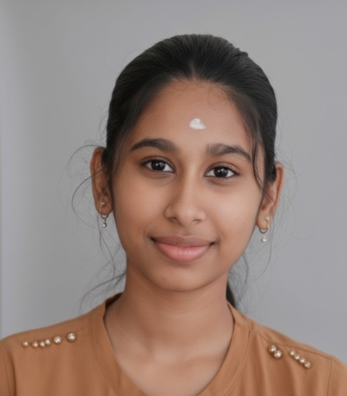

Business Analyst · Fintech & Financial Services
Experienced Business Analyst with 3 years specialising in Fintech & Financial Services — translating complex business problems into clear, actionable requirements. Expert in BRD/FRD documentation, user stories, UAT, and bridging stakeholders with delivery teams.

I am a Business Analyst with 3 years of experience in Banking & Financial Services, specializing in requirement gathering, BRD/FRD documentation, user stories, and UAT support. I work closely with stakeholders, developers, and QA teams to ensure business requirements are clearly understood and effectively implemented.
I have hands-on experience in analyzing business needs, performing gap analysis, and translating them into functional solutions within Agile environments. My work focuses on improving process efficiency, reducing manual effort, and ensuring smooth delivery of projects.
I am also skilled in Advanced Excel and SQL for data analysis and reporting, and currently upskilling in Power BI to enhance data-driven decision making.
Eliciting, documenting, and managing business and functional requirements via BRD & FRD with precision and clarity.
Designing As-Is and To-Be process flows to identify gaps and streamline operations across banking workflows.
Crafting detailed user stories and acceptance criteria aligned to Agile delivery in cross-functional teams.
Building UAT scenarios, coordinating testing cycles, and ensuring requirements are faithfully implemented.
Facilitating discussions between business stakeholders, developers, and QA teams for effective delivery.
Leveraging SQL and data tools to derive insights, validate data, and support reporting and decision-making.
I'm currently open to Business Analyst roles in Fintech & Financial Services. If you're looking for someone who bridges business and technology with clarity and precision, I'd love to connect.